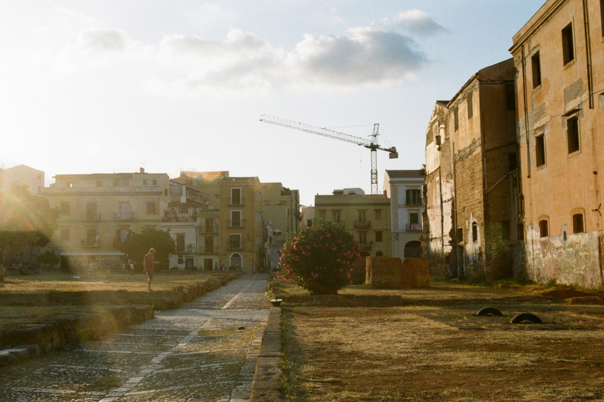

Imaginary Landscapes NO.5 (1952) is a composition by John Cage.
As a collective, we decided to put together 42 recordings of all members plus guests, these pieces were composed ad-hoc for the project.
The project was ideated during the first lockdown in Italy.
This fragment was composed during a period of quarantine in Palermo: I came back from Bologna, and in that period there were quite strong restrictions, especially due to the fact that at that moment in South Italy we did not experience a strong impact of the virus as it was in the North.
This work reflects the compositional research of some of my previous compositions, which is linked to the contrast (as well as similarities and ambiguities) between glitches and field recordings.
The recordings are just what I was hearing in the early mornings in the neighborhood of Kalsa (Palermo), which has a long tradition of a multi-cultural environment (the name is still the Arabic name of the area), being also one of the areas in Palermo directly facing the sea.
In the second part of the fragment it is possible to hear the prayer from the near mosque, and the singing is in a sort of an harmonic contrast with the bells of the catholic Basilica San Francesco d'Assisi.
The title of the composition is a freely-inspired tribute of a song of the band Slint.